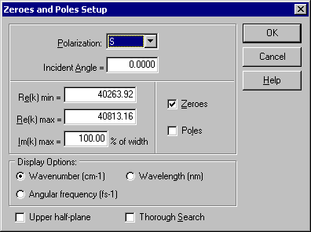

Zeroes and Poles Setup
Zeroes and Poles Setup
Navigation: OptiLayer Menu Commands > Analysis Menu > Zeroes and Poles >
Zeroes and Poles Setup
` <zeroes_and_poles.html>`__ ` <zeroes_and_poles.html>`__ ` <wdm_filter_gd_performance.html>`__
The Zeroes and Poles Setup window enables the user to specify the domain in the complex wavenumber plane where zeroes and poles are to be found, along with additional settings.

In the upper part of the window, it is necessary to specify the Polarization and Incident Angle for the amplitude reflection coefficient whose zeroes and poles are being investigated. The dimensions of a rectangular area in the complex plane, where zeroes and poles are searched for, can be specified in the middle part of this dialog (Re(k) min, Re(k) max, Im(k) max). It is also possible to select only Zeroes, only Poles, or both for computation. The lower part of the window allows specifying the preferable units for display (Wavenumber, Angular Frequency, or Wavelength). It is possible to display the area including both the upper and lower parts of the complex plane, or only the Upper half-plane. The latter setting can be convenient when only the distribution of poles is under investigation. The Thorough Search option can be used for complicated coatings when there is a possibility of missing some zeroes or poles during the search process. This setting increases the computational time.